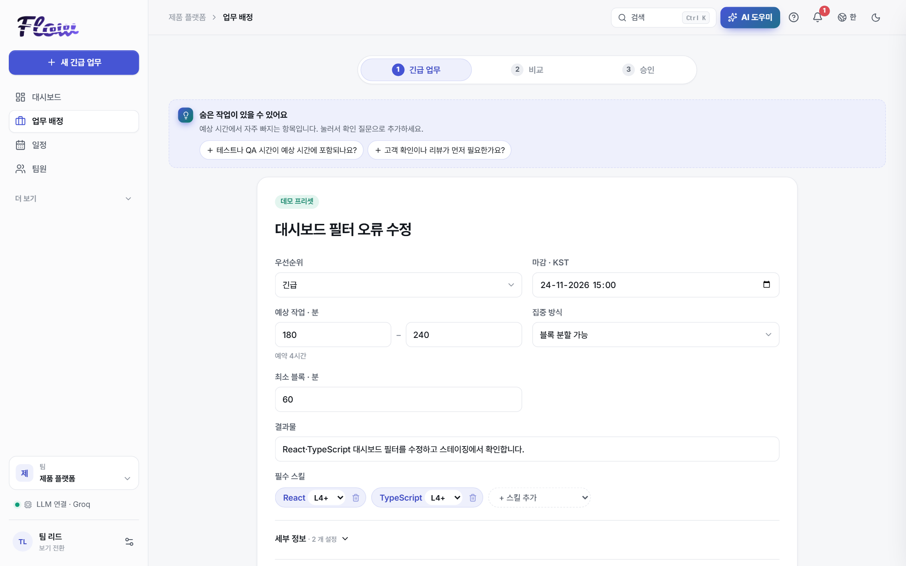
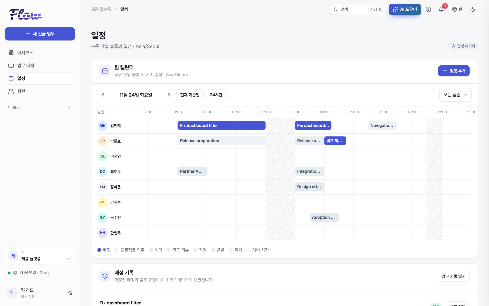
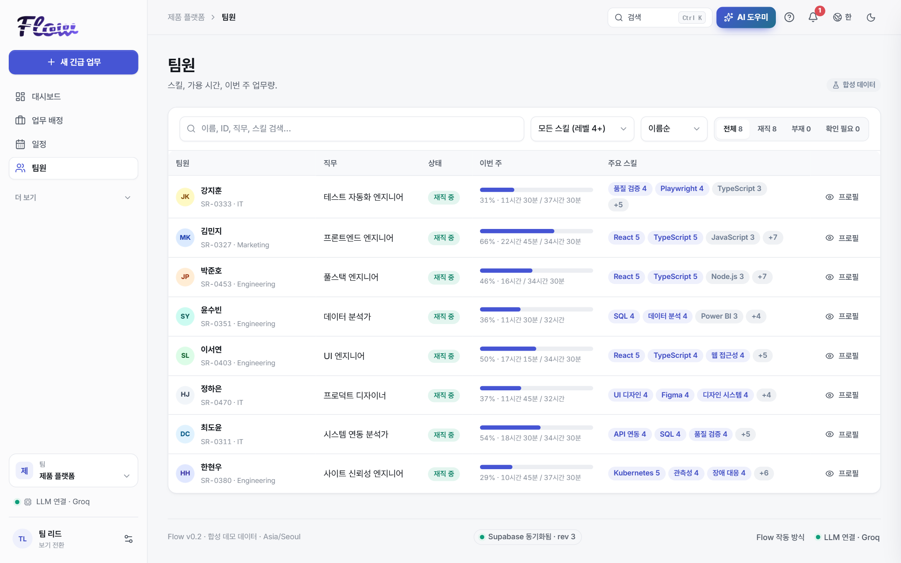
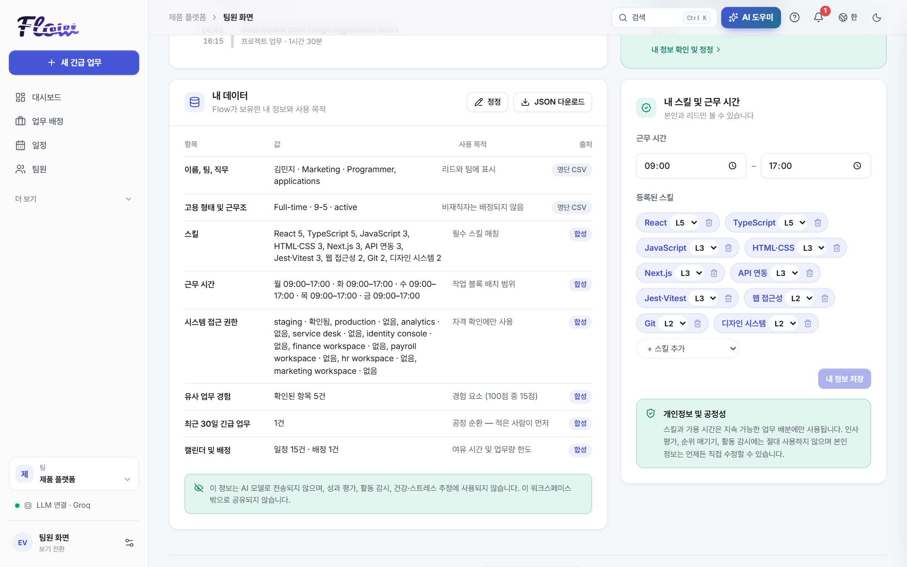
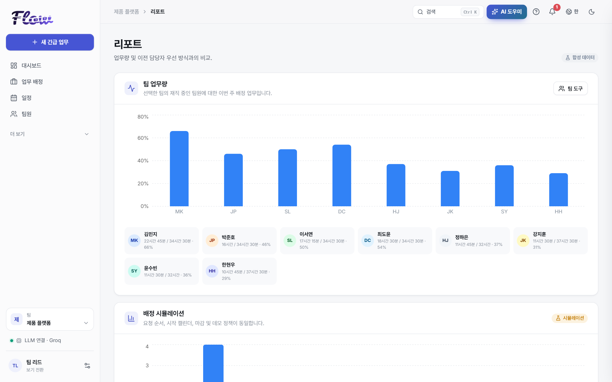
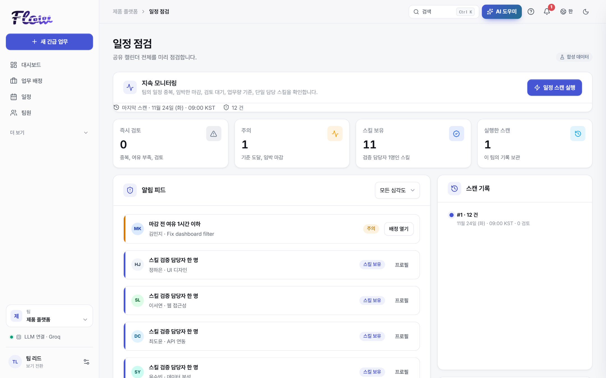
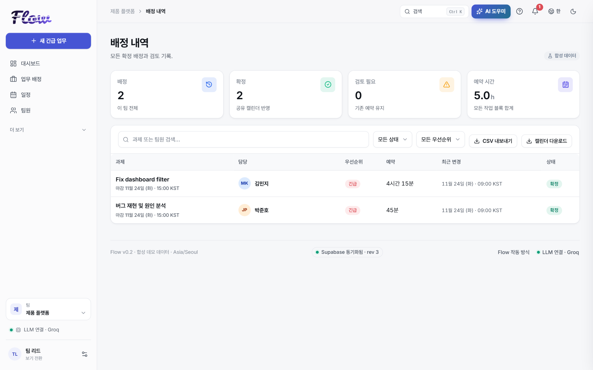

FLOW · 긴급 업무 배정
스킬, 실제 캘린더, 공정한 분배를 함께 보고 리드가 근거와 함께 결정합니다.
2026년 11월 · 실제 작동 화면 (합성 데모 데이터)
문제
01
“이거 잘하는 사람”에게 다시 맡깁니다. 스킬이 확인된 다른 팀원은 보이지 않습니다.
02
회의와 기존 업무로 조각난 일정 위에 4시간짜리 일이 얹힙니다. 마감 직전에야 알게 됩니다.
03
누가 최근 30일 동안 긴급 업무를 몇 건 맡았는지 아무도 모릅니다.
데모 데이터에서도 한 명이 30일간 긴급 업무 5건을 맡고 있습니다 (공정성 지수 53 / 100).
Flow의 방식
1 · 요청
한국어나 영어 요청을 붙여넣으면 AI가 스킬, 마감, 예상 시간을 초안으로 만듭니다.
2 · 비교
스케줄러가 실제 캘린더의 빈 시간, 주 52시간 한도, 최근 긴급 업무 수로 후보를 정렬합니다.
3 · 승인
리드가 승인하면 작업 블록이 캘린더에 예약되고 기록이 남습니다.
AI는 초안을 쓰고 이유를 설명할 뿐, 결정하지 않습니다. 순위는 규칙 기반 스케줄러가 계산합니다.
업무 흐름
팀 리드
판단 · 결정
Flow
AI · 스케줄러
팀원
확인 · 피드백
요청 접수
메신저 요청을그대로 붙여넣기
02 · AI
업무 초안
스킬 · 마감 ·예상 시간 추출
03 · 규칙
후보 정렬
캘린더 · 52시간공정성 기준
04 · 결정
리드 승인
근거를 확인하고사람이 결정
05
예약 · 기록
캘린더 예약,승인 이력 저장
06
확인 · 검토
내 배정 확인,검토 요청 가능
검토 요청 시 리드가 재검토
리드 · 대시보드
오늘 집중 가능한 시간, 긴급 업무 부담, 일정 충돌을 첫 화면에서 확인합니다.
1단계 · 긴급 업무 요청
요청 메시지에서 AI가 우선순위, 마감, 예상 시간, 필수 스킬을 뽑아냅니다.

2단계 · 후보 비교
후보마다 스킬, 마감 전 실제 가용 시간, 배정 후 영향, 이번 주 근무 시간을 보여줍니다.
3단계 · 승인 후 일정
승인된 업무는 작업 블록으로 팀 캘린더에 들어가고, 모든 기기에서 같은 일정이 보입니다.

팀원 목록
리드는 팀원 한 명 한 명의 이번 주 근무량과 확인된 스킬 레벨을 한 표에서 봅니다.

새 디자인 · 팀원 화면
배정받는 사람의 화면입니다. 내 근무량, 내 배정, 다음 일정을 첫 화면에서 확인합니다.
개인정보
Flow가 가진 내 정보 전체와 사용 목적, 출처를 표로 보여주고 직접 정정할 수 있습니다.

리포트
선택한 팀의 이번 주 업무량을 팀원별로 비교하고, 배정 시뮬레이션으로 다른 순서를 시험해 봅니다.

일정 점검
공유 캘린더 전체를 점검해 일정 중복, 마감 임박, 스킬 보유자 부족을 미리 찾아냅니다.

배정 내역
누가, 언제, 어떤 근거로 배정했는지가 남고 CSV나 캘린더 파일로 내보낼 수 있습니다.

모의 전문가 리뷰 · 반영 결과
제품 디자이너
“랜딩 페이지가 문서처럼 읽히고, 가장 좋은 아트워크는 대시보드에만 있습니다.”
반영: 아트워크를 넣은 랜딩 히어로, 2×2 테마 카드, 비교 화면 레이아웃 버그 수정
UX 리서처
“리드는 사람을 고르러 왔는데 후보가 아래에 있습니다. 결정이 먼저여야 합니다.”
반영: 후보를 맨 위로, 선택 요약과 승인 버튼이 따라오는 결정 바
HR 테크 자문 (한국 기업)
“첫 질문은 ‘주 52시간을 지키나요?’입니다. 개인정보보호법 원칙도 보여야 합니다.”
반영: 모든 후보에 40h · 52h 근무 미터, 최소 수집 · 목적 제한 · 열람·정정권 표시
엔터프라이즈 SaaS 전략가
“가치를 한 줄로: 먼저 답한 사람이 아니라 실제로 집중할 시간이 있는 사람.”
반영: 랜딩 헤드라인 교체, “52h 법정 한도 · 항상 준수”를 핵심 지표로
다음 단계
승인 후 10초 되돌리기 · 카카오워크 · 네이버웍스 · Slack 연동 · 리드와 팀원 로그인
구조
브라우저 · React
Flow API 서버
Supabase · Postgres
공개 역할(anon)은 테이블에 접근할 수 없고, 서버 역할만 읽고 씁니다.
정리
긴급 업무를 실제로 할 수 있는 사람에게, 공정하게, 기록과 함께.
스킬 확인
실제 캘린더
주 52시간 준수
공정한 순환
개인정보 공개